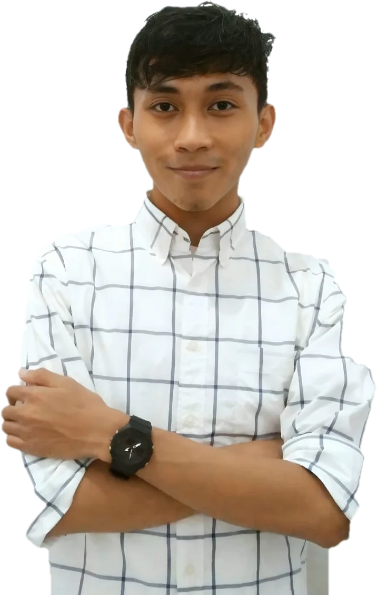

Arief
Arief Hidayatullah — Operations Supervisor at Boulder Planet Indonesia. I run the daily floor, and build the systems that run it.Arief Hidayatullah — Operations Supervisor di Boulder Planet Indonesia. Saya menjalankan operasional harian, sekaligus membangun sistem yang menjalankannya.

The work, in numbersKerja nyata, dalam angka
From my own work tracker and event records. Task figures as of 8 Sep 2026.Dari tracker kerja dan catatan event saya sendiri. Angka tugas per 8 Sep 2026.
Five domains. One owner.Lima domain. Satu PIC.
Keep the gym reliable today. Improve how it runs tomorrow.Menjaga gym tetap andal hari ini. Memperbaiki cara kerjanya untuk besok.
Systems & AutomationSistem & Otomasi
Pain points → SOPs, dashboards and alerts that hold up.Masalah berulang → SOP, dashboard, dan notifikasi yang andal.
Workforce & CoordinationTenaga Kerja & Koordinasi
Manpower, attendance and cross-team requests in one plan.Manpower, kehadiran, dan permintaan lintas tim dalam satu rencana.
Customer & IncidentsPelanggan & Insiden
Fix what went wrong — then stop it happening again.Selesaikan masalahnya — lalu cegah agar tidak terulang.
Events & CommunityEvent & Komunitas
Concept to closeout — and feedback into the next one.Dari konsep sampai closing — lalu evaluasi untuk event berikutnya.
Facility ReadinessKesiapan Fasilitas
Every shift opens ready — desk, rental, access, utilities.Setiap shift dibuka dalam kondisi siap — front desk, rental, akses, utilitas.
Ten projects. Tap to open.Sepuluh proyek. Ketuk untuk buka.
Each one started as a recurring operational problem and ended as a staff-tested system.Masing-masing berawal dari masalah operasional berulang, dan berakhir sebagai sistem yang sudah diuji staf.
- 01IdentifyIdentifikasiThe recurring pain, not the loud oneMasalah berulang, bukan yang paling ramai
- 02StabilizeStabilkanFix today, log the decisionAtasi hari ini, catat keputusannya
- 03DocumentDokumentasiSOP, checklist or trackerSOP, checklist, atau tracker
- 04AutomateOtomasiRemove the repeat stepHilangkan langkah berulang
- 05TestUjiReal staff, real shift pressureStaf nyata, tekanan shift nyata
- 06TrainLatihHand over ownershipSerahkan kepemilikan
- 07MeasureUkurDid it hold?Apakah bertahan?
From support to Event ICDari pendukung ke Event IC
Four signature competitions delivered — from operations support to Event IC.Empat kompetisi unggulan terlaksana — dari dukungan operasional hingga Event IC.
BoulderFest 2025
SEA Boulder League R1
Space Games 2026
BoulderFest 2026
- Permits & mall accessPerizinan & akses mall
- Ambulance & paramedicsAmbulans & paramedis
- Tenant sponsorship outreachPenjajakan sponsor tenant
- Event chatbot FAQFAQ chatbot event
- Part-time manpower planRencana manpower part-time
Where it startedTempat semuanya dimulai
Student leadership, national events and community work: where I learned to run a room before running a floor.Organisasi kampus, event nasional, dan kerja komunitas: tempat saya belajar memimpin ruangan sebelum memimpin operasional.
Learning on recordPembelajaran tercatat
Tap a certificate to view it full size.Ketuk sertifikat untuk melihat ukuran penuh.
Tools that fit the businessTools yang sesuai kebutuhan
Stack
StrengthsKeunggulan
People. Process. Tech.Orang. Proses. Teknologi.
"I take a fragmented operational problem, find out what frontline staff actually need, and turn it into a system with clear ownership, usable data and follow-through.""Saya mengambil masalah operasional yang terpecah-pecah, mencari tahu apa yang benar-benar dibutuhkan staf di lapangan, lalu mengubahnya menjadi sistem dengan kepemilikan yang jelas, data yang bisa dipakai, dan tindak lanjut."
A technology-enabled operator: I define the problem and the workflow, then build it with tools that fit.Operator yang didukung teknologi: saya mendefinisikan masalah dan alur kerjanya, lalu membangunnya dengan tools yang tepat.
I own routine calls covered by SOP. Material financial, legal or safety calls go to the right owner.Keputusan rutin yang diatur SOP saya pegang. Keputusan finansial, hukum, atau keselamatan yang material saya eskalasi ke pihak yang tepat.